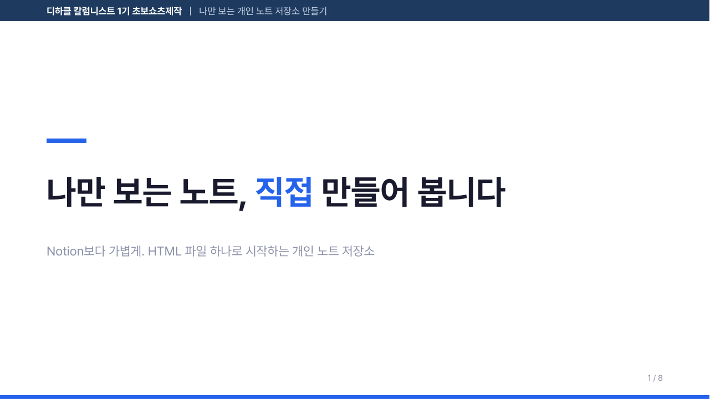
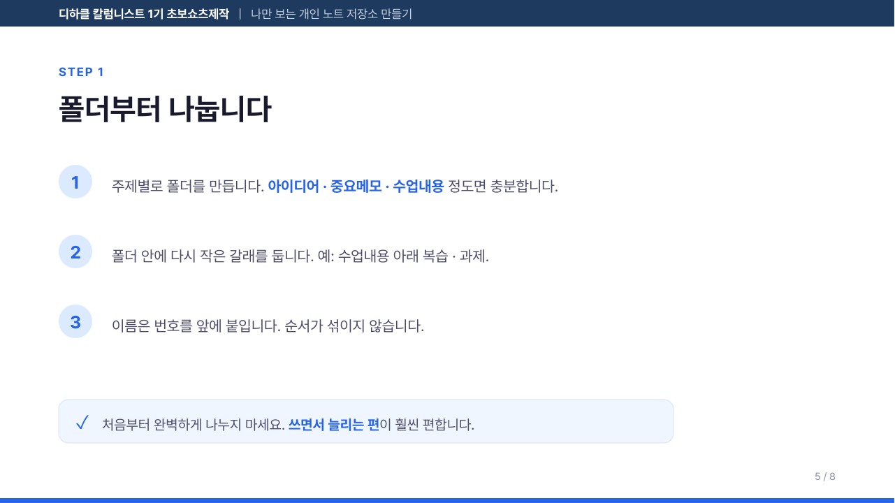
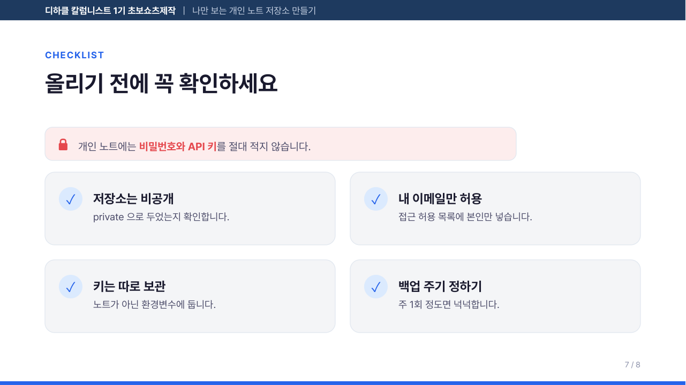

Claude Code 스킬 만들기
같은 지시를 매번 다시 쓰고 계신가요? "표는 이 형식으로", "색은 이 팔레트로", "먼저 이것부터 확인하고" — 이런 설명을 대화창에 반복해서 붙여넣는 일이 하루에 몇 번씩 생깁니다. 그런데 붙여넣는 걸 자주 깜빡하고, 깜빡하면 결과물이 매번 조금씩 달라집니다.
스킬(Skill)은 그 반복을 없애는 장치입니다. 한 번 적어두면, 필요한 순간에 Claude가 알아서 꺼내 읽습니다.
- 스킬이 정확히 무엇이고, 프롬프트를 붙여넣는 것과 뭐가 다른지
- 10분 만에 직접 스킬 하나 만들기 — 잘 됐는지 눈으로 확인하는 방법까지
- 실제로 쓰이는 스킬 해부 — 수업용 PPT를 만들어 주는
edu-slides - 만든 스킬을 나중에 어떻게 불러 쓰는지, 안 불려올 땐 뭘 고치는지
Claude Code가 설치돼 있고, 터미널에서 claude 를 실행해 본 적이 있으면 충분합니다. 프로그래밍 지식은 필요 없습니다. 3장까지만 따라 해도 스킬 하나가 완성됩니다.
1. 스킬이 뭔가요
스킬은 "필요할 때만 펴 보는 설명서"입니다.
요리로 비유해 봅시다. 주방에 요리책이 스무 권 꽂혀 있습니다. 요리사가 그걸 전부 외우고 다니지는 않습니다. 김치찌개를 만들 차례가 되면 그때 해당 페이지를 펴 봅니다. 평소에는 책장에 꽂혀 있을 뿐이라 주방이 복잡해지지 않습니다.
스킬이 정확히 그렇습니다. 폴더 안에 설명서를 넣어두면, Claude는 평소엔 제목과 한 줄 설명만 알고 있습니다. 그러다 관련된 일이 들어오면 그때 펴서 읽습니다.
프롬프트를 붙여넣는 것과 뭐가 다른가요
| 매번 붙여넣기 | 스킬 | |
|---|---|---|
| 어디에 있나 | 내 메모장, 카톡, 머릿속 | 내 컴퓨터의 정해진 폴더 |
| 언제 적용되나 | 내가 기억해서 붙여넣을 때만 | 관련된 요청이 오면 자동으로 |
| 결과가 일정한가 | 붙여넣기 나름 | 항상 같은 기준 |
| 다른 사람과 공유 | 매번 복사해서 전달 | 폴더를 통째로 전달 |
| 대화가 무거워지나 | 매번 길어짐 | 필요할 때만 읽음 |
스킬은 "무엇을 하는지"보다 "언제 꺼내야 하는지"가 더 중요합니다. 아무리 잘 쓴 스킬도 꺼내지지 않으면 없는 것과 같습니다. 이 이야기는 4장에서 자세히 다룹니다.
2. 스킬은 어디에 두나요
스킬은 폴더 하나 + 그 안의 SKILL.md 파일 하나가 최소 단위입니다. 그 폴더를 어디에 두느냐에 따라 적용 범위가 달라집니다.
| 종류 | 두는 위치 | 언제 쓰나 |
|---|---|---|
| 전역 스킬 | C:\Users\내이름\.claude\skills\맥·리눅스는 ~/.claude/skills/ |
어느 프로젝트에서나 쓰고 싶을 때. 대부분 이쪽 |
| 프로젝트 스킬 | 프로젝트 폴더 안.claude\skills\ |
그 프로젝트에서만 쓸 때. git에 올려 팀과 공유 가능 |
폴더 구조는 이렇게 생겼습니다. 스킬 이름이 곧 폴더 이름입니다.
파일 이름은 반드시 SKILL.md 입니다. skill.md, Skill.md, SKILL.txt 는 인식되지 않습니다. 폴더 이름은 영문 소문자와 하이픈만 씁니다(class-note ○, 수업노트 ✗, Class Note ✗).
3. 10분 실습 — 첫 스킬 만들기
바로 하나 만들어 봅니다. 만들 것은 수업 노트를 정해진 형식으로 정리해 주는 스킬입니다.
이 예제를 고른 이유가 있습니다. 스킬이 제대로 불려왔는지 눈으로 바로 확인할 수 있기 때문입니다. 결과물에 📘 이모지와 표가 나오면 스킬이 작동한 것이고, 안 나오면 안 된 것입니다. 애매할 일이 없습니다.
1단계 — 폴더 만들기
Claude Code 대화창에 그냥 이렇게 말해도 됩니다. 직접 만들고 싶다면 아래 명령을 씁니다.
mkdir "$env:USERPROFILE\.claude\skills\class-note"mkdir -p ~/.claude/skills/class-note2단계 — SKILL.md 쓰기
방금 만든 폴더 안에 SKILL.md 파일을 만들고 아래 내용을 그대로 넣습니다.
---
name: class-note
description: 수업에서 배운 내용을 노트로 정리할 때 사용한다. "수업 노트 정리해줘", "오늘 배운 것 정리", "강의 내용 요약해줘" 같은 요청에 쓴다.
---
# 수업노트 정리
아래 형식을 **그대로** 지켜서 정리한다. 형식을 바꾸지 않는다.
## 📘 수업노트
| 배운 것 | 한 줄 요약 |
|---|---|
| (핵심 개념) | (한 문장으로) |
### 🔁 다음에 복습할 것
- 2~3개만 고른다. 많이 적지 않는다.
### ❓ 아직 모르겠는 것
- 솔직하게 적는다. 없으면 "없음"이라고 적는다.
## 규칙
- 표는 5줄을 넘기지 않는다. 넘으면 덜 중요한 것을 버린다.
- 한 줄 요약은 한 문장으로 끝낸다.
- 어려운 말이 나오면 괄호로 쉬운 말을 덧붙인다.위쪽 --- 사이에 있는 두 줄이 가장 중요합니다. 이게 뭔지는 다음 장에서 설명합니다. 지금은 그대로 두세요.
3단계 — 잘 등록됐는지 확인하기
파일을 저장하면 Claude Code를 껐다 켤 필요 없이 바로 인식됩니다. 확인하는 방법은 두 가지입니다.
- 대화창에
/를 입력해 봅니다목록에class-note가 보이면 등록된 것입니다. - 그냥 시켜 봅니다"오늘 배운 것 정리해줘" 라고 말한 뒤, 결과에 📘 와 표가 나오는지 봅니다.
📘 이모지와 🔁 다음에 복습할 것 항목이 나왔다면 성공입니다. 그냥 줄글로만 정리해 줬다면 스킬이 안 불려온 것입니다. 그 경우 8장을 보세요.
내 스킬 만들어 보기
아래 칸을 채우면 SKILL.md 내용이 만들어집니다. 복사해서 파일에 붙여넣으면 바로 내 스킬이 됩니다.
폴더 이름으로도 그대로 씁니다.
사용자가 실제로 할 법한 말을 그대로 넣는 것이 요령입니다.
4. SKILL.md 뜯어보기
SKILL.md 는 두 부분으로 되어 있습니다.
윗부분 --- 로 감싼 이름표. Claude가 평소에 늘 보고 있는 부분입니다.
아랫부분 실제 설명서 본문. 스킬이 꺼내질 때만 읽는 부분입니다.
이 구분이 스킬의 전부라고 해도 과언이 아닙니다. Claude는 대화 내내 스킬 수십 개의 이름표만 들고 있습니다. 본문까지 전부 들고 있으면 대화가 금방 무거워지기 때문입니다. 그러다 요청이 들어오면 이름표만 보고 "이 스킬을 펴 볼까?"를 판단합니다.
그래서 description 한 줄이 스킬의 성패를 가릅니다.
description 잘 쓰는 법
description: PPT를 만듭니다.
무엇을 하는지만 있고 언제 써야 하는지가 없습니다. 사용자가 "수업 자료 좀 만들어줘"라고 했을 때 이 스킬을 펴야 할지 판단할 근거가 없습니다.
description: 비개발자용 교육 슬라이드(16:9 pptx)를 정해진 디자인으로 만든다. "수업 자료 PPT 만들어줘", "강의 슬라이드", "교육용 pptx" 같은 요청에 사용한다.
사용자가 실제로 쓸 법한 표현이 들어 있습니다. 판단할 근거가 생깁니다.
- "언제"를 먼저 씁니다. "~할 때 사용한다"로 시작하면 자연스럽게 써집니다.
- 사용자가 할 법한 말을 그대로 넣습니다. 따옴표로 두세 개 예시를 넣으면 확실해집니다.
- 한국어 요청이면 한국어로 씁니다. 수업에서 한국어로 말할 거라면 description도 한국어가 낫습니다.
- 너무 넓게 잡지 않습니다. "문서를 만든다" 같은 설명은 온갖 상황에 다 걸려서 엉뚱할 때 튀어나옵니다.
특정 단어를 넣으면 그 단어가 나올 때 기계적으로 켜지는 것이 아닙니다. Claude가 그 문장을 읽고 판단합니다. 그래서 키워드를 나열하는 것보다 어떤 상황인지 문장으로 설명하는 편이 잘 작동합니다.
5. 스킬이 커지면 — 파일 나누기
스킬이 길어지면 SKILL.md 하나에 다 넣지 않고 나눕니다. 이유는 아까 그 "요리책" 논리와 같습니다.
SKILL.md 는 스킬이 꺼내질 때 통째로 읽힙니다. 여기에 1000줄짜리 색상표와 코드를 다 넣으면, 스킬을 쓸 때마다 그 1000줄이 전부 대화에 들어옵니다. 그래서 "항상 필요한 것"만 SKILL.md에 남기고, 나머지는 옆 파일로 빼서 필요할 때만 읽게 합니다.
| 폴더 | 넣는 것 | 언제 읽히나 |
|---|---|---|
SKILL.md | 작업 순서, 핵심 규칙, 다른 파일 안내 | 스킬이 꺼내질 때 항상 |
scripts/ | 실제로 실행되는 코드 | 실행할 때만 (읽지 않고 돌림) |
reference/ | 긴 표, 상세 규격, 원본 지침 | 자세히 확인이 필요할 때만 |
examples/ | 예제 파일, 견본 | 흉내 낼 것이 필요할 때만 |
매번 필요한가? → SKILL.md. 가끔 필요한가? → 옆 파일로 빼고 SKILL.md에 "자세한 건 reference/… 참고"라고 한 줄 적어둡니다.
6. 실제 사례 — 수업 PPT를 만드는 스킬
이제 실제로 돌아가는 스킬을 봅니다. edu-slides 는 수업용 슬라이드를 정해진 디자인으로 만들어 주는 스킬입니다. 이런 결과가 나옵니다.



중요한 건 이 세 장이 서로 다른 대화에서 만들어져도 간격·색·글자 크기가 완전히 같다는 점입니다. 그게 스킬을 쓰는 이유입니다.
폴더는 이렇게 생겼습니다
왜 디자인을 "코드로" 박아 두었나
이게 이 스킬의 핵심 결정입니다. 색과 간격을 글로만 적어두면 이런 일이 생깁니다.
- 1장은 카드 간격이 30, 3장은 40 — 매번 조금씩 달라집니다.
- 페이지 번호를 어떤 장에는 깜빡하고 안 넣습니다.
- 말풍선 상자가 페이지 번호를 덮어 버립니다.
그래서 이 스킬은 "카드를 그린다", "표지를 만든다" 같은 동작을 파이썬 함수로 미리 만들어 두었습니다. 함수를 부르면 간격과 색은 항상 같습니다. 사람이(그리고 Claude가) 정할 수 있는 건 내용뿐입니다. 실수할 여지 자체를 없앤 것입니다.
그래서 내용은 이렇게 간단하게 적습니다.
{
"type": "step_detail",
"step_no": "1",
"title": "폴더부터 나눕니다",
"items": [
"주제별로 폴더를 만듭니다. **아이디어 · 중요메모** 정도면 충분합니다.",
"폴더 안에 다시 작은 갈래를 둡니다."
],
"callout": "처음부터 완벽하게 나누지 마세요.",
"callout_kind": "tip"
}"눈으로 확인"이 작업 순서에 들어 있는 이유
edu-slides 의 SKILL.md 에는 이런 문장이 있습니다.
눈으로 확인한다. 스크립트가 에러 없이 끝난 것은 "잘 나왔다"가 아니다.
슬라이드를 만드는 코드는 글자가 카드 밖으로 삐져나가도 에러를 내지 않습니다. 조용히 잘못된 파일을 만들어 냅니다. 그래서 이 스킬은 만든 뒤 PDF로 바꿔 이미지로 뽑아 직접 보는 단계를 순서에 넣어 두었습니다.
스킬을 만들 때 "어떻게 확인하는지"를 함께 적어두면 품질이 확 올라갑니다. "결과에 표가 있는지 본다", "링크를 눌러 열리는지 본다" 처럼 구체적으로 적습니다.
이 스킬 직접 받아서 써보기
압축을 풀면 edu-slides 폴더가 나옵니다. 그 폴더를 통째로 C:\Users\내이름\.claude\skills\ 안에 넣으면 끝입니다.
C:\Users\내이름\.claude\skills\edu-slides\SKILL.md ← 이 경로에 파일이 있어야 함슬라이드를 실제로 만들려면 파이썬 라이브러리 하나가 필요합니다.
pip install python-pptx| 준비물 | 필요 여부 | 없으면 |
|---|---|---|
python-pptx | 필수 | 슬라이드가 아예 안 만들어집니다 |
| Pretendard 폰트 | 권장 | 다른 한글 폰트로 자동 대체됩니다 (모양만 조금 달라짐) |
| LibreOffice | 선택 | PDF 미리보기를 못 만듭니다. pptx는 정상적으로 나옵니다 |
7. 만든 스킬 쓰는 법
① 그냥 말하면 됩니다 (기본)
스킬을 부르는 특별한 명령은 필요 없습니다. 하고 싶은 일을 그대로 말하면 Claude가 이름표를 보고 알아서 꺼냅니다.
이번 주 수업 슬라이드 만들어줘.
시리즈명은 "디하클 칼럼니스트 1기", 강의명은 "개인 노트 만들기".
표지 / 오늘 할 것 / STEP 1~2 / 마무리 이렇게 6장이면 돼.② 이름을 대고 부르기 (확실한 방법)
꼭 그 스킬로 하고 싶을 때는 이름을 직접 말합니다. 가장 확실합니다.
edu-slides 스킬로 이번 수업 슬라이드 만들어줘.또는 대화창에 / 를 입력하면 스킬 목록이 뜹니다. 거기서 /edu-slides 처럼 골라도 됩니다.
③ 고치기
SKILL.md 를 열어 고치고 저장하면 그만입니다. 다시 시작할 필요 없습니다. "이 스킬에서 카드 색을 좀 더 연하게 바꿔줘" 처럼 Claude에게 고쳐 달라고 해도 됩니다.
④ 다른 PC로 옮기기
- 간단하게 — 스킬 폴더를 복사해서 새 PC의
.claude\skills\에 넣습니다. - 여러 PC에서 계속 쓸 거라면 — 스킬 폴더를 git 저장소로 만들어 두면
git pull로 동기화됩니다. - 수업에서 같이 쓸 거라면 — 프로젝트 안
.claude\skills\에 넣고 저장소에 올립니다. 저장소를 받은 사람 모두가 같은 스킬을 씁니다.
스킬 파일에 비밀번호나 API 키를 절대 적지 마세요. 스킬은 폴더째 복사되고 저장소에 올라갑니다. 한 번 올라간 키는 지워도 기록에 남습니다.
8. 안 될 때 — 점검 순서
가장 흔한 증상은 "스킬을 만들었는데 안 불려온다" 입니다. 위에서부터 차례로 확인하세요.
- 파일 이름이
SKILL.md가 맞나요?메모장으로 저장하면SKILL.md.txt가 되는 일이 많습니다. 파일 확장자 표시를 켜고 확인하세요. - 위치가
.claude\skills\스킬이름\SKILL.md인가요?skills폴더 바로 밑에SKILL.md를 두면 안 됩니다. 반드시 스킬 이름 폴더를 한 겹 거쳐야 합니다. ---두 줄이 제대로 있나요?맨 첫 줄이---여야 합니다. 앞에 빈 줄이 있으면 인식되지 않습니다.name이 폴더 이름과 같나요?폴더는class-note인데name: 수업노트로 적는 실수가 잦습니다.description에 "언제 쓰는지"가 있나요?여기까지 왔는데도 안 불려온다면 십중팔구 이 문제입니다. 4장으로 돌아가 사용자가 할 법한 말을 넣으세요.- 그래도 안 되면 이름을 대고 부르세요"class-note 스킬로 정리해줘" 라고 하면 확실히 불립니다. 이러면 description 문제인지 아닌지 판별됩니다.
그 밖에 자주 하는 실수
| 증상 | 원인 | 해결 |
|---|---|---|
| 엉뚱한 때 튀어나온다 | description이 너무 넓다 | 범위를 좁히고 예시 표현을 구체적으로 |
| 결과가 매번 다르다 | 규칙이 "잘 정리한다" 처럼 모호하다 | "표는 5줄 이하" 처럼 숫자로 못 박기 |
| 대화가 무겁고 느리다 | SKILL.md가 너무 길다 | 긴 표·규격을 reference/ 로 분리 |
| 스킬이 시키는 대로 안 한다 | 규칙이 너무 많다 | 정말 중요한 것 5개만 남기기 |
9. 직접 해보기
수업에서 만들어 볼 스킬 후보입니다. 결과를 눈으로 확인할 수 있는 것을 고르세요.
- 복습 퀴즈 만들기 스킬수업 내용을 주면 객관식 5문제 + 정답을 맨 아래 접어서 만들어 주는 스킬.
- 깃 커밋 메시지 스킬변경 내용을 주면 정해진 형식(한 줄 요약 + 빈 줄 + 상세 3줄)으로 써 주는 스킬.
- 과제 피드백 스킬코드를 주면 잘한 것 2개 → 고칠 것 2개 → 다음 목표 1개 순서로만 말해 주는 스킬.
완성 기준
~/.claude/skills/아래에 폴더가 있고, 그 안에SKILL.md가 있다.description에 사용자가 할 법한 말이 두 개 이상 들어 있다.- 이름을 대지 않고 자연스럽게 요청했을 때 스킬이 불려온다.
- 결과물에 내가 정한 형식(이모지·표·순서)이 실제로 나타난다.
10. 정리
- 스킬 = 폴더 하나 +
SKILL.md하나. 그게 최소 단위입니다. description이 전부입니다. "언제 쓰는지"와 "사용자가 할 법한 말"을 넣으세요.- 매번 필요한 것만 SKILL.md에. 긴 규격과 코드는 옆 파일로 빼세요.
- 결과가 흔들리면 코드로 박으세요. 글로 적은 규칙은 조금씩 달라지지만, 함수는 항상 같습니다.
- 확인하는 방법까지 적으세요. "에러가 없다"와 "잘 나왔다"는 다릅니다.
- 비밀은 넣지 않습니다. 스킬은 복사되고 공유되는 물건입니다.
수업에서 쓰실 때: 3장(10분 실습)까지만 같이 해도 수강생 전원이 자기 스킬을 하나씩 갖게 됩니다. 6장의
edu-slides는 "스킬이 커지면 이렇게 된다"를 보여주는 완성 사례이므로, 시간이 부족하면 결과 이미지 세 장만 보여주고 넘어가도 됩니다.